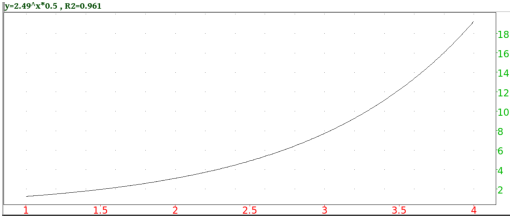

8.2.5 Exponential regression: exponential_regression exponential_regression_plot
You might expect a set of points to lie on an exponential curve
y=b ax. The exponential_regression command finds the
values of a and b which give you the best fit exponential.
-
exponential_regression takes two arguments:
-
xcoords, a list of x-coordinates.
- ycoords, a list of y-coordinates.
You can combine two arguments into a matrix with two columns (each
list becomes a column of the matrix).
- exponential_regression(xcoords,ycoords)
returns a sequence a,b of the numbers in the best fit exponential
y=bax.
Example
Input:
evalf(exponential_regression([[1,1],[2,4],[3,9],[4,16]]))
or:
evalf(exponential_regression([1,2,3,4],[1,4,9,16]))
(where the evalf is used to get a numeric approximation to an
exact expression, see Section 5.8.1).
Output:
so the best fit exponential curve will be y = 0.5*(2.49146187923)x.
The exponential_regression_plot command draws the best fit
exponential.
-
exponential_regression_plot takes two arguments:
-
xcoords, a list of x-coordinates.
- ycoords, a list of y-coordinates.
You can combine two arguments into a matrix with two columns (each
list becomes a column of the matrix).
- exponential_regression_plot(xcoords,ycoords)
draws the best fit exponential, and puts the equation and R2
value above the graph.
Example
Input:
exponential_regression_plot([1,2,3,4],[1,4,9,16])
Output:
